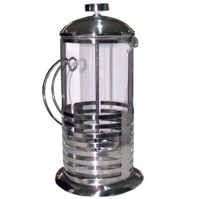
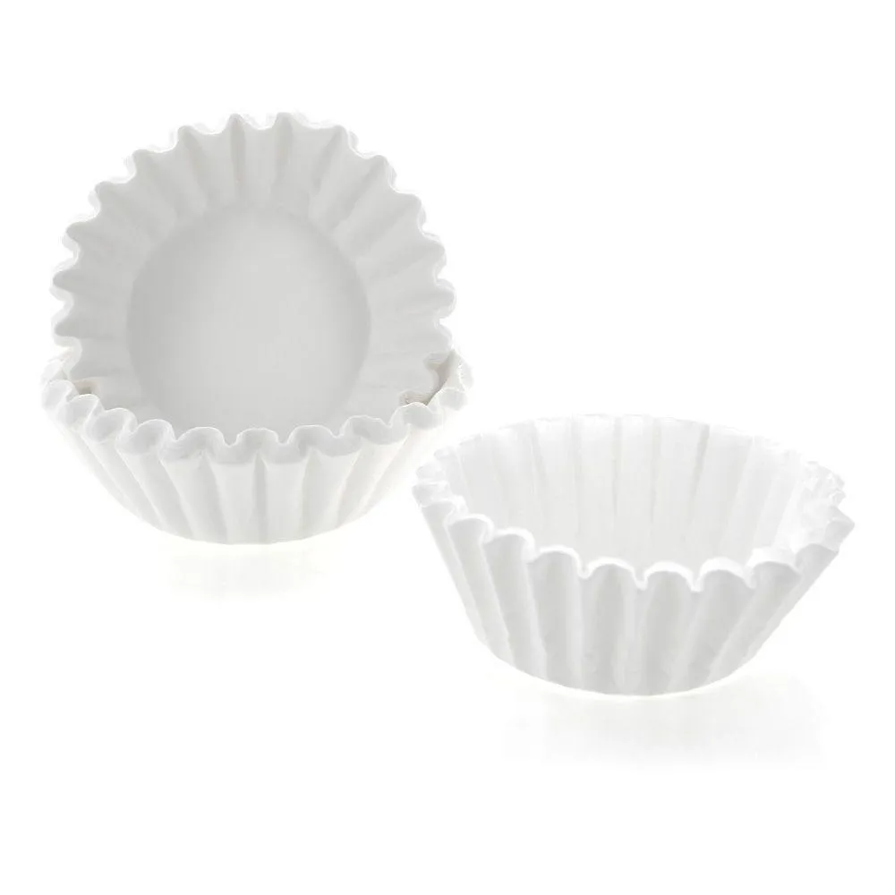

Prensa francesa
Cafetera de prensa francesa te permite hacer café sin usar electricidad ni filtros de papel en cuatro minutos, obteniendo un café aromático y delicioso.
$45000

Filtros
Filtrar el agua caliente de los granos molidos del café para la elaboración del café.
$30000
Chemex
En la cafetera Chemex, la preparación del café es sencilla ya que se trata de una cafetera de goteo y además es un proceso 100% manual. El café que se obtiene.
$110000